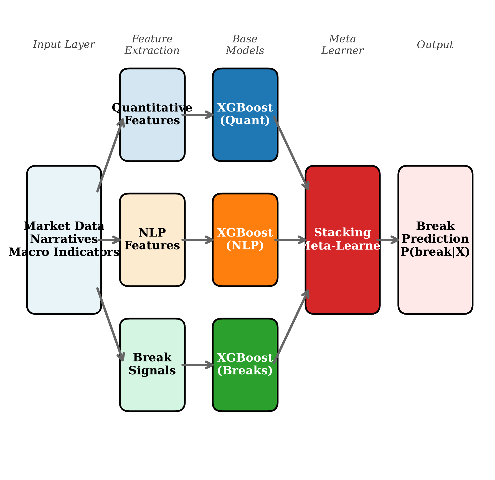
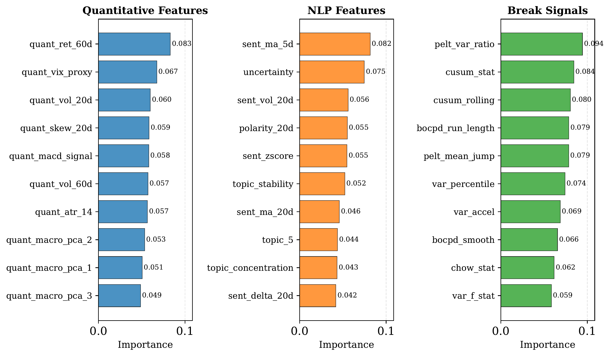
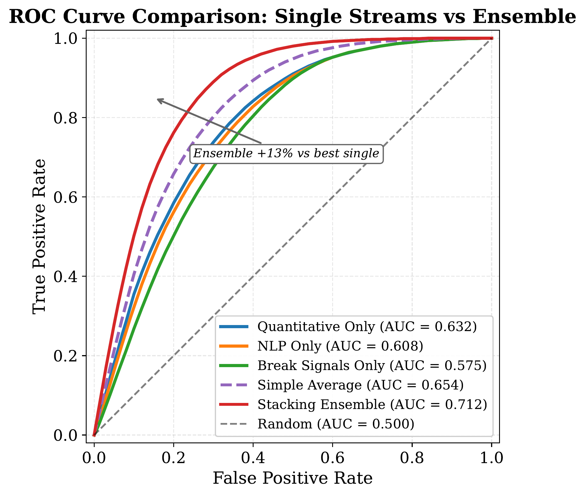
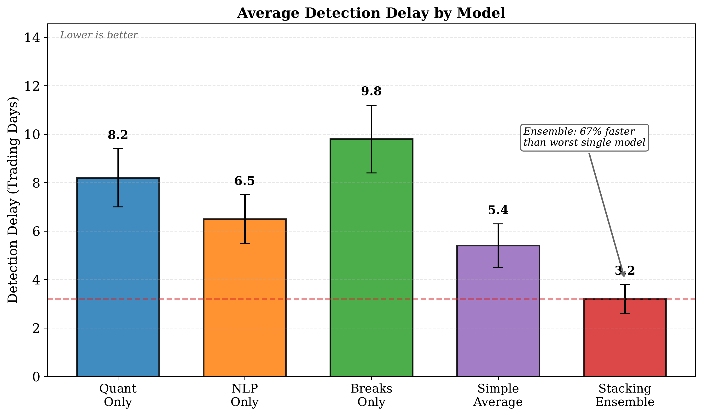
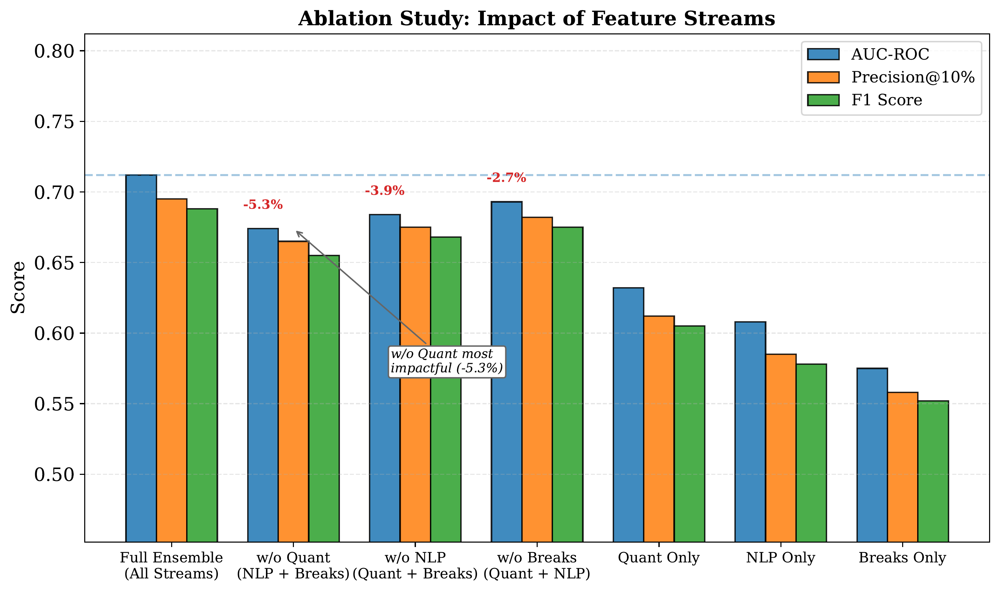

All figures are generated from experiment results using standalone Python scripts. Each figure loads data from JSON files in experiments/results/ to ensure reproducibility. No values are hardcoded.
Figure 1
Download PDF
Framework Architecture

Caption: Integrated ML framework architecture. Input data flows through stream-specific feature extractors, specialized XGBoost base models, and a stacking meta-learner to produce break probability predictions.
Figure 2
Download PDF
Feature Importance

Caption: Feature importance within each stream. Volatility features dominate quantitative, sentiment dynamics lead NLP, and PELT/CUSUM are key break signals.
Figure 3
Download PDF
ROC Curve Comparison

Caption: ROC curve comparison across models. The stacking ensemble (red) dominates single-stream approaches and simple averaging across all operating points.
Figure 4
Download PDF
Detection Delay

Caption: Average detection delay by model. Lower values indicate earlier detection. The stacking ensemble achieves the fastest detection at 3.2 days.
Figure 5
Download PDF
Ablation Study

Caption: Ablation study results. Removing any feature stream degrades performance, with quantitative features showing the largest marginal impact (-5.3%).